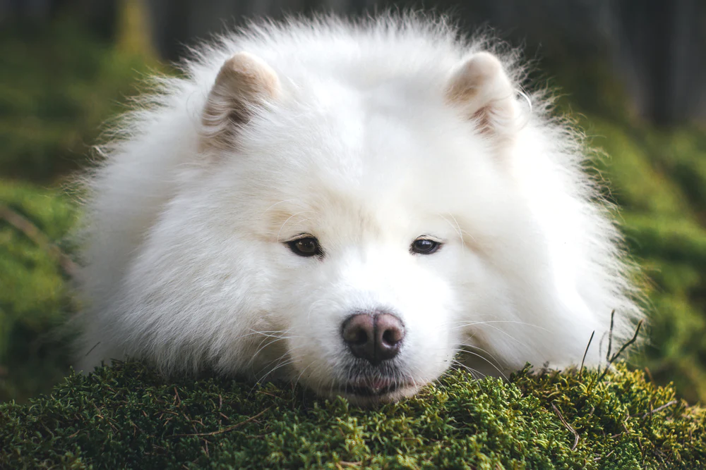
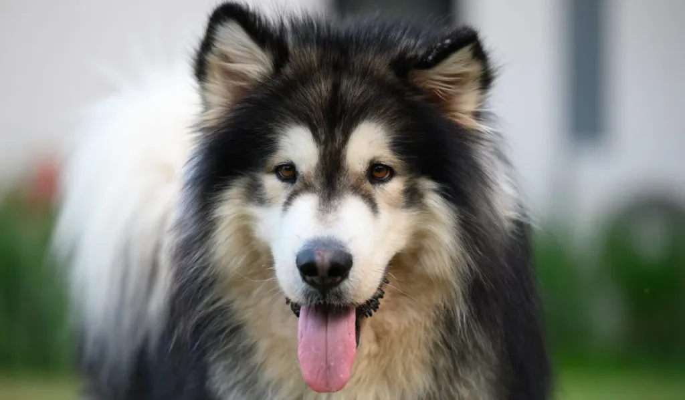
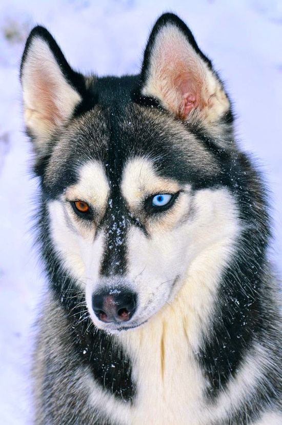

Huskies quite literally come in many colors, however, before I get into the colors I must clarify a few things.
There are two other dog species (off the top of my head) that look like huskies that can very easily be mis-identified as one.
Samoyed
First, there is the samoyed. A very fluffy (usually) white fur covered dog.
The fact that these dogs are similar in size with huskies (both breeds being medium sized) makes them even more easier to misidentify. However, they are quite different. You can read more about them here!
Alaskian Malamute
These fluffy monsters are practically the same as huskies, except for their origin, and size. Alaskian malamutes classify as large breed dogs and usually end up with more fur than huskies can have at their longest.
You can read more about them here!
The Main Information!
Now that I've cleared the easy misconceptions, let's begin with the promised information!
For starters, huskies are relatively commonly found with heterochromia or in other words, have 2 different eye iris colors. However, huskies only have two iris colors anyways. These two colors being light blue and brown.
Now for fur colors! Huskies can be found with these as their main colors. However, they can show traces of other colors on their bodies on different small patches.
|
Black and White |
Black and Black |
|---|---|
|
Gray and White |
White and White |
|
Brown and White |
Red and White |